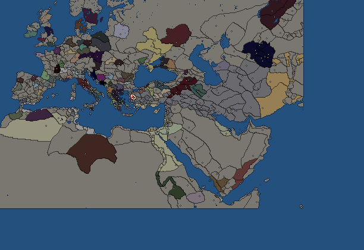
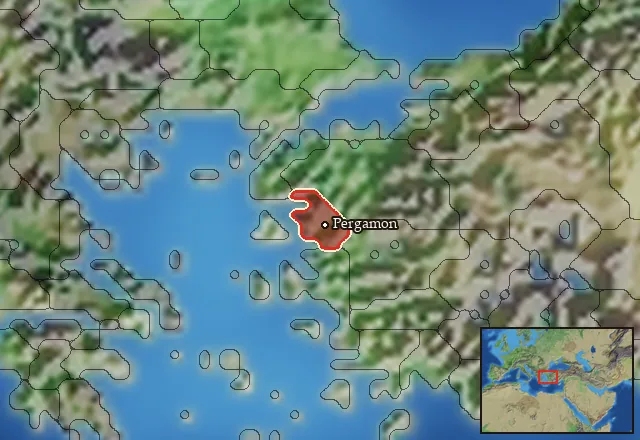

RTR: Imperium Surrectum
RTR: Imperium SurrectumPergamon


- difficulty Very Difficult
- Western Hellenistic culture
- believes
 Macedonian
Macedonian - 1 settlement
- capital Pergamon
- 5,500 manpower
- 3 characters
- 21 faction units
- 435 regional units
The campaign brief
"By Hermione Pyrrhos had no child, but by Andromache he had Molossos, Pielos, and Pergamos, who was the youngest. After the murder of Pyrrhos at Delphi and the death of Helenos the kingdom in Epirus passed to Molossos, while Pergamos crossed into Asia and killed Areios, despot in Teuthrania, who fought with him in single combat for his kingdom, and gave his name to the city which is still called after him." – Pausanias (1.11.1 – 1.11.2)
Impatience is the misfortune of ambition.
When I was still an infant, a cruel twist of fate left me incapacitated and prey to sneers for the rest of my life. At a public burial in Tieion, the nurse who carried me was caught in the crowd and pressed so hard that from that day onward I was left mutilated. Would that they knew how my life would plan out! My father Attalos and my mother Boa, devastated as they might have been, nevertheless provided me with an upbringing fit for a young nobleman, and I made sure to excel at any task presented by my tutors. Their support gave me strength to persevere among my peers, all of noble blood, ambitious and of better condition...
But I am a patient man. So many noble men, blinded by the stories of heroism, courage and destiny, have met a premature and inglorious end. But a eunuch from the small town on the shore of the Euxine Sea now rules a rich and prosperous city!
I first served under Antigonos, the ruler of Asia, until he met his end at Ipsos. After I proved capable, I was given the charge of a small fortress town of Pergamon by Lysimachos, who entrusted me with guarding the large treasury kept there. For many years I was loyal to the great king, in whose good graces I remained until he married that scheming harpy of a woman, Arsinoe, daughter of Ptolemy Soter. As the writers always warn, a young bride poisons the mind of an old man! The unfortunate Lysimachos was swayed to the will of his young queen and had his eldest son Agathocles executed on false charges of treason, to make way for the son he had by Arsinoe. As I protested, the queen turned her enchanted husband's good graces into disfavour and ultimately forced my desertion of my benefactor. I have then offered my services at the disposal of the powerful Seleukos, who with his vast army defeated Lysimachos at Korupedion 11 years ago. My position at Pergamon was confirmed in the aftermath (also owing to a large gift of money that I offered), even elevated to the stature of a lord. But Seleukos too soon met his end by another of that wretched family, Ptolemy Keraunos, who then married his half-sister, the widow Arsinoe, and set himself up as king in Macedon... until the Celts cut his head off and made Arsinoe a widow the second time. In her misfortune she now rules Egypt as the queen-sister of her other brother, Ptolemy Philadelphos!
But fates smiled on poor Philetairos too. By controlling the treasury of late Lysimachos, I was able to ransom the body of his victor Seleukos from that treacherous usurper and send his ashes to his grieving son, king Antiochos, in whose goodwill I have stayed ever since. I have rebuilt and enriched Pergamon, whose public buildings I have enlarged: temple of Demeter on the Acropolis I have constructed; palace fit for kings I have built for myself; or the cult centre of Cybele, to which worshippers from the neighbouring regions flock. I have offered my benefactions to Delos and Delphi, who proclaimed me as their benefactor and friend; Kyzikos, which for my help during the Galatian raids honoured me with a festival in my name, similar to many other cities and temples on whose behalf I have intervened.
For you see, it is not merely strength and proper condition that provide success. They provide glory, yes – but I am not interested in that. That is what more ambitious men desire. That is also how they end up in continuous struggle for power. I, on the other hand, wish for prosperity, for stability... for survival. It is perhaps my mutilated nature of not being a whole man, that has fated me with such meagre desires for myself. But as worthy men have perished during my thirty years of ruling this city, I remained and increased my influence and prestige.
I am now an old man, nephew. I tell you all this in hope that you might consider being content, ruling with wisdom instead of ambition. I can have no children, so you Eumenes will inherit all that I have. What is left for you to decide once I am gone is how you will rule... How will you rule?
Starting diplomacy
Allied with (1):  Seleucid Empire
Seleucid Empire
Trade agreements with (1):  Seleucid Empire
Seleucid Empire
At war with (1):  Galatians
Galatians
Like every faction, it is also at war with the  Free Peoples, who hold every settlement no faction does.
Free Peoples, who hold every settlement no faction does.
Units you can recruit
The same as in the main campaign.
Starting settlements
Pergamon begins with 1 settlement and 5,500 manpower.
What is already built in each settlement
Pergamon, in Kaikia: Small Treasury, Governor's Villa, Wooden Palisade, Homeland, Region Information Scroll, Roads, Local Barter, Olive Grove (Rural), Trade Port, Slope Pasturing (Husbandry), Basic Armoury, Cisterns (Sanitation)
Homeland
Pergamon's homeland is 1 region. Only there can it install the Homeland government (more on homelands).

Starting characters
| Name | Role | Age | Name | Role | Age | Name | Role | Age | |||
|---|---|---|---|---|---|---|---|---|---|---|---|
| Philetairos | General | 73 | Eumenes | General | 28 | Theos | Admiral | 36 |
Faction mechanics
From the game's own guide. See also the other game guides.
Special Mechanics
Pergamon has a mercenary centre in the capital, check its Region Information Building for more details.
Military reforms
Pergamon has three reforms.
Attalid reforms 1 requirements: Own 30 units and be at war with the Seleucid Empire
Unlocks: Mysian Javelinmen, Mysian Archers
Attalid reforms 2 requirements: Control 25 cities.
Unlocks: Pergamene Agema Phalangites, Aspidophoroi, Mysian Cavalry, Pergamene Thorakitai, Mysian Thureophoroi
Thracian Sica Cavalry Reform requirements: 75 Turns
Unlocks: Thracian Sica Cavalry
Reforms
For every faction: Military innovations have arrived!, Second wave of military innovations have arrived!.